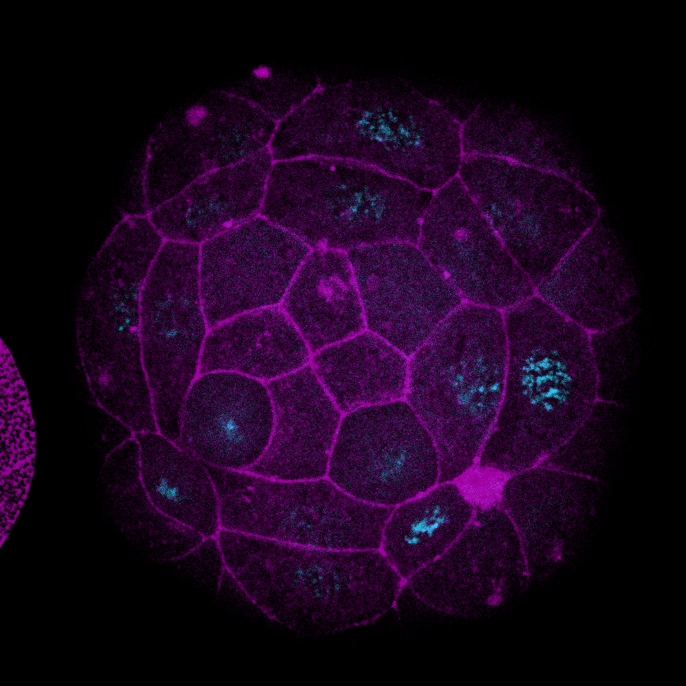

На этой странице располагаются фотографии эмбрионов большого прудовика с флуоресцентного микроскопа,
обработанные в среде ImageJ в рамках большого практикума.

Ранняя гаструла большого прудовика, совмещение оптических срезов Z3—Z4. Methyl green + Phalloidin 543Ранняя гаструла большого прудовика, совмещение оптических срезов Z5—Z7. Methyl green + Phalloidin 543